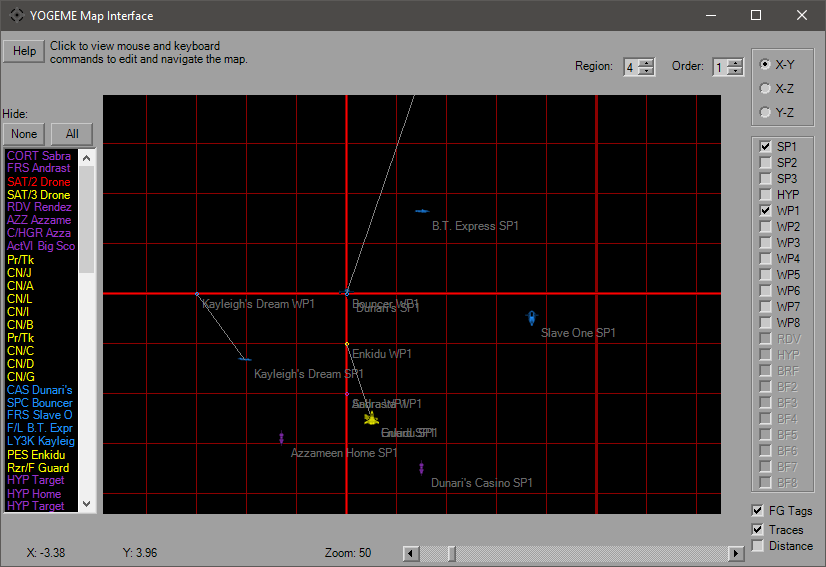
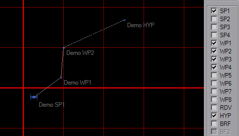

Map Dialog

The Map Dialog is the visual interface of placing FlightGroup Waypoints. From here start locations, flight paths and the briefing locations can be viewed and moved. This is one of the few resizable windows in YOGEME, it can also be maximized for better viewing.
By default, only the first Start Point will be visible when you open the map. Additional waypoints can be set in the Options Dialog. Icons are color-coded according to their IFF and are not size-relative. On this map an ISD looks the same size as a TIE, so check placements in-game. The initial view will be X-Y top view, the upper right will allow to to view from the "side" and "front" of the mission space. Use the checkboxes on the right-hand side to show/hide additional waypoints. Selecting the BRF waypoint (not available in XWA) will hide all others. The disabled checkboxes will activate according to platform.
To move around the map, right-click at any point to re-center the map. Double-clicking will zoom in around your pointer. The mouse wheel will also zoom the map in and out. Middle-click will reset the map to default location (0, 0) and zoom (40). Click and drag an icon/WP to move it. The coordinates of your mouse pointer updates as you move over the map.

The image above shows the Traces ability. You'll note that WP1-WP4 are selected, although only two appear on the map. Selecting the checkbox only helps if the WP is enabled. Solid lines connect SP1 to the waypoints, and a dashed line connects the last WP used to the HYP point. Unselecting the Tags checkbox hides the words near icons and waypoints.